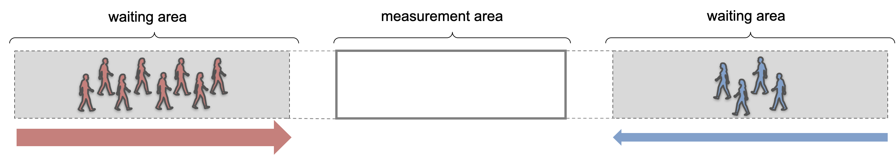

Lane formation in bi-directional flow#
This notebook can be directly downloaded here to run it locally.
Lane formation is a quantitative phenomenon, that is observed in bidirectional pedestrian flows. It involves pedestrians automatically forming a number of lanes with varying widths, where individuals within each lane move in the same direction. This self-organizing behavior of pedestrians can have a significant impact on overall evacuation time.
In this example, we will replicate a simple experiment performed by Feliciani et al 2016. In their experiment, Feliciani et al observed bidirectional pedestrian flow in a corridor with two comparative lanes in each flow direction. Thereby, they changed the ratio of both groups of pedestrians Flow ratio is changed by changing each group size while maintaining comparable total flow and density.

The following is the implementation of the experiment setup in JuPedSim:
length = 38
width = 3
area = [[0, 0], [length, 0], [length, width], [0, width]]
exit_polygon_left = [(0, 0), (1, 0), (1, width), (0, width)]
exit_polygon_right = [
(length - 1, 0),
(length, 0),
(length, width),
(length - 1, width),
]
distribution_polygon_left = Polygon([[0, 0], [12, 0], [12, width], [0, width]])
distribution_polygon_right = Polygon(
[[length - 12, 0], [length, 0], [length, width], [26, width]]
)
measurement_area = pedpy.MeasurementArea([[14, 0], [24, 0], [24, 3], [14, 3]])
measurement_line_left = pedpy.MeasurementLine([[14, 0], [14, width]])
measurement_line_right = pedpy.MeasurementLine([[24, 0], [24, width]])
walkable_area = pedpy.WalkableArea(area)
fig, ax = plt.subplots(nrows=1, ncols=1)
ax.set_aspect("equal")
pedpy.plot_measurement_setup(
walkable_area=walkable_area,
measurement_areas=[measurement_area],
measurement_lines=[measurement_line_left, measurement_line_right],
ml_color="red",
ml_width=2,
axes=ax,
)
for id, polygon in enumerate(
[distribution_polygon_left, distribution_polygon_right]
):
x, y = polygon.exterior.xy
plt.fill(x, y, alpha=0.1, color="gray")
centroid = polygon.centroid
plt.text(
centroid.x,
centroid.y,
f"Start {id + 1}",
ha="center",
va="center",
fontsize=10,
)
Definition of the simulation scenarios#
Since the main focus of the abovementioned experiment was on investigating the influence of the ratio, we will set up different scenarios to investigate the variation of the density in the measurement area with varying ratios.
In order to compare the formation of lanes and evacuation times, we will replicate the setup used in the experiment. This involves creating a corridor with two lanes in each direction of flow. We will use different simulation scenarios by initializing various combinations of ratios and densities. These scenarios include unidirectional flow, unbalanced bidirectional flows, and a balanced bidirectional flow scenario.
This replication study aims to investigate the impact of lane formation on evacuation time in different scenarios of bidirectional pedestrian flows.
simulations = {}
COLUMNS = 9
number_agents = [
(6 * COLUMNS, 0 * COLUMNS),
(5 * COLUMNS, 1 * COLUMNS),
(4 * COLUMNS, 2 * COLUMNS),
(3 * COLUMNS, 3 * COLUMNS),
]
for number in number_agents:
trajectory_file = f"trajectories_number_agents_{number}.sqlite"
simulation = jps.Simulation(
dt=0.05,
model=jps.CollisionFreeSpeedModel(
strength_neighbor_repulsion=2.6,
range_neighbor_repulsion=0.1,
range_geometry_repulsion=0.05,
),
geometry=walkable_area.polygon,
trajectory_writer=jps.SqliteTrajectoryWriter(
output_file=pathlib.Path(trajectory_file),
),
)
simulations[number] = simulation
Initialisation of the simulation and distribution of agents#
The simulation will commence by assigning a specific number of pedestrian agents. These agents will be distributed randomly across the corridor using two distinct distribution polygons, deviating from Feliciani’s paper where participants were positioned on predetermined grid points.
The simulation will then proceed with initializing the journeys of each agent. Left-facing groups will opt to exit through the right door, while right-facing groups will choose to exit through the left door.
For further analysis, it is essential to keep record of the identification numbers of agents belonging to different groups throughout their distribution process.
right_wing = {}
left_wing = {}
for number, simulation in simulations.items():
exits = [
simulation.add_exit_stage(exit_polygon_left),
simulation.add_exit_stage(exit_polygon_right),
]
journeys = [
simulation.add_journey(jps.JourneyDescription([exit])) for exit in exits
]
# first group
positions = jps.distribute_by_number(
polygon=distribution_polygon_right,
number_of_agents=number[1],
distance_to_agents=0.4,
distance_to_polygon=0.7,
seed=45131502,
)
group1 = set(
[
simulation.add_agent(
jps.CollisionFreeSpeedModelAgentParameters(
position=position,
journey_id=journeys[0],
stage_id=exits[0],
)
)
for position in positions
]
)
# second group
positions = jps.distribute_by_number(
polygon=distribution_polygon_left,
number_of_agents=number[0],
distance_to_agents=0.4,
distance_to_polygon=0.7,
seed=45131502,
)
group2 = set(
[
simulation.add_agent(
jps.CollisionFreeSpeedModelAgentParameters(
position=position,
journey_id=journeys[1],
stage_id=exits[1],
)
)
for position in positions
]
)
right_wing[number] = group1
left_wing[number] = group2
Running simulations#
Now we will run series of simulations, for different ratio values (here defined by numbers of agents in both groups).
For each simulation, it runs the simulation until either all agents have finished or a maximum iteration count is reached.
Once a simulation completes, its results are saved to a uniquely named file.
trajectory_files = {}
for number, simulation in simulations.items():
while simulation.agent_count() > 0 and simulation.iteration_count() < 3000:
simulation.iterate()
trajectory_file = f"trajectories_number_agents_{number}.sqlite"
trajectory_files[number] = trajectory_file
Visualisation of the simulation results#
Here we visualize the movement of the agents in every simulation along with plots of the trajectories.
from jupedsim.internal.notebook_utils import animate, read_sqlite_file
agent_trajectories = {}
for number in number_agents:
trajectory_file = trajectory_files[number]
agent_trajectories[number], walkable_area = read_sqlite_file(
trajectory_file
)
animate(
agent_trajectories[number],
walkable_area,
every_nth_frame=5,
width=1200,
height=400,
title_note=f"Ratio: {min(number) / sum(number):0.2f}",
).show()
fig, axes = plt.subplots(
nrows=len(number_agents), ncols=1, height_ratios=[5, 5, 5, 5]
)
axes = np.atleast_1d(axes)
colors = ["red", "blue"]
for ax, number in zip(axes, number_agents):
trajectories = agent_trajectories[number].data
for ig, group in enumerate([left_wing[number], right_wing[number]]):
traj = pedpy.TrajectoryData(
trajectories[trajectories["id"].isin(group)],
frame_rate=agent_trajectories[number].frame_rate,
)
pedpy.plot_trajectories(
traj=traj,
walkable_area=walkable_area,
axes=ax,
traj_color=colors[ig],
traj_width=0.3,
traj_start_marker=".",
)
ax.set_title(f"Ratio: {min(number) / sum(number):.2f}")
plt.tight_layout()
fig.set_size_inches((10, 12))
plt.show()
Voronoi-based measurements#
Although the same total number of agents is simulated in all scenarios, the density in the middle of the corridor (within the measurement area) can still vary depending on the ratio of the distribution of agents within the simulation.
Therefore, here will will be calculating the density within the measurement are using the Voronoi method.
import warnings
warnings.filterwarnings("ignore")
individual = {}
density_voronoi = {}
for number in number_agents:
individual[number] = pedpy.compute_individual_voronoi_polygons(
traj_data=agent_trajectories[number], walkable_area=walkable_area
)
density_voronoi[number], intersecting = pedpy.compute_voronoi_density(
individual_voronoi_data=individual[number],
measurement_area=measurement_area,
)
Density#
density_voronoi_ = {}
for number in number_agents:
individual[number] = pedpy.compute_individual_voronoi_polygons(
traj_data=agent_trajectories[number], walkable_area=walkable_area
)
density_voronoi[number], intersecting = pedpy.compute_voronoi_density(
individual_voronoi_data=individual[number],
measurement_area=measurement_area,
)
fig0, ax0 = plt.subplots(nrows=1, ncols=1)
labels = []
colors = plt.rcParams["axes.prop_cycle"].by_key()["color"]
for i, number in enumerate(number_agents):
pedpy.plot_density(
density=density_voronoi[number], axes=ax0, color=colors[i]
)
labels.append(f"Ratio: {min(number) / sum(number):.3f}")
ax0.legend(labels)
plt.show()
Speed#
For the speed time series we will differenciate between the two groups.
Evacuation time vs Ratios#
From the observed increase of the density with increasing ratio, we expect that the evacuation time will increase as well. Again, due to the poor handling of conflicts in narrow space, the agents from both groups tend to clog in the middle of the corridor.
Discussion of results#
As we might expect, the is highest for balanced ratio, which is an indicator of high number of unsolved conflicts.
This is expected because the used model is known for not handling lane simulations very well dure to poor conflict resolution. See Xu2021, where a simplified collision-free velocity model that anticipates collisions is presented. This updated model diminishes gridlock events and offers a more accurate depiction of pedestrian movements compared to the previous version.
The following result show mainly that a balanced ratio lead in the simulation to higher densities and more conflicts that remain mainly unsolved. This in turns is reflected in higher evacuation times.
Download#
This notebook can be directly downloaded here to run it locally.